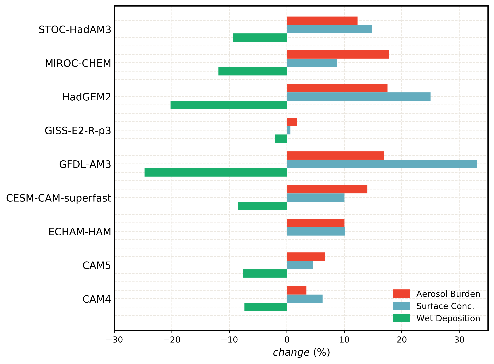
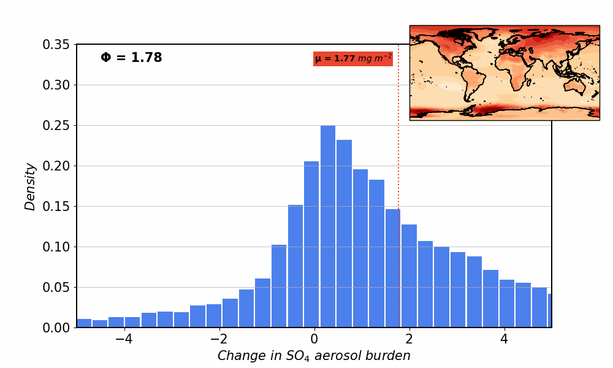
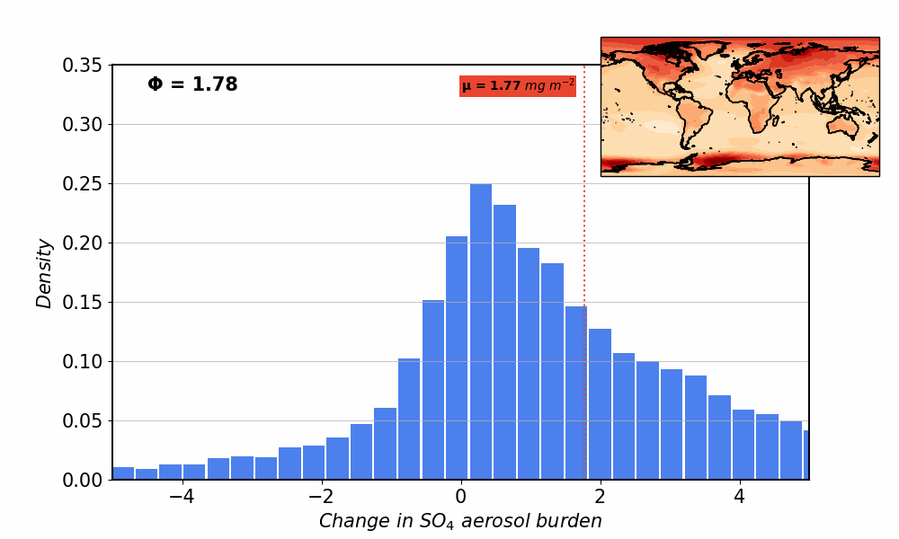

Aerosol burden response to future climate perturbation
{kind=link}
A large inconsistency persists among studies estimating aerosol response to future warming. Continued greenhouse-gas induced warming perturbation is expected to be associated with changes in factors that control the lifetime, transport, chemistry, and the amount of natural and anthropogenic aerosols (Held and Soden, 2006; Chang et al., 2012). This is mainly caused by decreased large-scale precipitation, particularly over land, which reduces wet removal and increases aerosol burden (Allen et al., 2016).
State-of-the-art ACCMIP models (Lamarque et al., 2013) and in-house simulations show a global annual mean increase in both natural and anthropogenic aerosols under warming. An associated decrease in global annual mean total wet removal is also simulated by these models (Figure 1). Is there a robust signal in our climate system that can be linked to these responses?
![ Figure 2: Sulfate aerosol burden change as probability density function over the the Northern Hemispheric (NH) midlatitudes land during June, July and August (JJA). The histogram changes as a function of land-sea warming contrast (LSWC) over NH midlatitudes during JJA. The vertical line (red) follows the mean changes as a function of LSWC. The spatial map (inset) shows the surface temperature changes as a function of LSWC during JJA. Corresponding land-sea warming ratio (Φ) is shown at the top left. All responses are based on CESM CAM5 simulations.](images/animation.gif){kind=link}
The Land-Sea warming contrast is a robust climate signal found in both observations and climate model simulations, which is expected to enhance with continued global warming. The rapidly warming continents can hold more moisture compared to the increased moisture that is transported from the slowly warming ocean. This leads to a mean relative humidity drop over land. Most models parameterize large-scale precipitation based, in part, on a relative humidity threshold (air needs to be at saturated before precipitation can occur). To the extent that future warming drives decreases in relative humidity over land, there should also be a corresponding decrease in large-scale precipitation and wet deposition. Idealized simulations show how a deacrease in LSWC, in terms of warming ratio, can weaken the increase in aerosol burden (Figure 2).
I setup and conduct model simulations with state-of-the-art climate models—GFDL AM3 and NCAR's CAM5— to investigate future changes in aerosols and the meteorological processes, involving land-air interactions, responsible for driving the changes, focused on understanding the role of land-sea warming contrasts.
{kind=link}
{kind=link}
{kind=link}